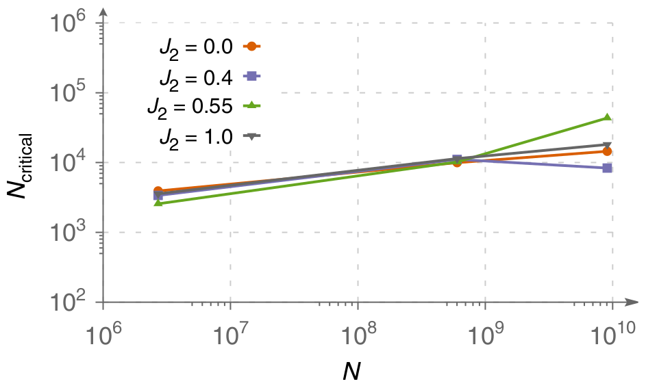

Wavefunction sign structure generalization in frustrated magnets
Nikita Astrakhantsev (University of Zurich)
Konstantin S. Tikhonov (Skolkovo Institute of Science and Technology)
Mikhail Katsnelson (Radboud University)
Andrey Bagrov (Uppsala University)
Outline
- Basic concepts
- Experimental setup
- Results
- Conclusions and outlook
Expressibility & Generalization

image source: www.datarobot.com
Expressibility is the ability of a neural network to accurately represent data.
Generalization is the ability of a neural network to correctly predict results on samples which were not included in the training dataset.
Sampling
Obtain $|\psi\rangle$ with exact diagonalization
\[ |\psi\rangle = \sum_i \psi_i |\sigma_i\rangle \]
$|\psi_i|^2$ forms a discrete probability distribution
(no Monte Carlo, no ergodicity issues)
$\varepsilon_{\text{train}}$
training dataset
$1 - \varepsilon_{\text{train}}$
everything else (test dataset)
Physical systems

$$\hat H = J_1 \sum\limits_{\langle a, b \rangle} \boldsymbol{\sigma}_a \otimes \boldsymbol{\sigma}_b + J_2 \sum\limits_{\langle \langle a, b \rangle \rangle} \boldsymbol{\sigma}_a \otimes \boldsymbol{\sigma}_b$$
- $J_2/J_1$ allows us to tune frustration
- Periodic clusters of 24, 30, 32, or 36 spins
Training
- "amplitude network" predicts $\log(|\psi_i|)$
regression task; minimize MSE or maximize overlap - "sign network" predicts $\text{sign}(\psi_i)$
binary classification task; minimize cross-entropy
Sign structure generalization
- 24 site clusters; $\varepsilon_\text{train} \approx 10^{-2}$
- Generalization quality reflects phase transitions

Amplitudes vs Signs
24 site Kagome lattice

- Hybrid states:
-
- amplitudes from NN & signs from ED;
- signs from NN & amplitudes from ED.
Sign structure is much harder to learn!
More data?
24 site Kagome lattice

Generalization quality exhibits a phase transition.
There is a critical amount of data necessary to learn the sign structure.
Scaling with system size
Square lattice (24, 32, & 36 sites)

$N$ — Hilbert space dimension;
$N_\text{critical}$ — critical dataset size
Critical dataset size grows slowly with the sytem size.
What about VMC?
No problem expressing the state.
VMC results mimic the behavior of generalization quality.
Conclusions
- Good generalization is not guaranteed, especially in frustrated phases.
- Learning signs is a much more difficult task than learning amplitudes.
- Generalization quality as function of training dataset exhibits a sharp increase at some critical $\varepsilon_\text{train}$.
For more info: Westerhout et al, Nat Commun 11, 1593 (2020)